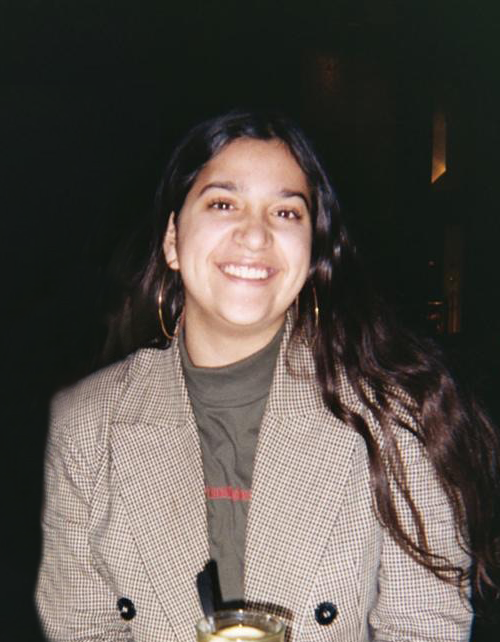

Hvem er jeg
Mit navn er Sonia El Moumi Nielsen, jeg er 22 år gammel og bor i København.
Til daglig læser jeg til Multimediedesigner på 1. Semester på KEA - Copenhagen School of Design and Technology.
Jeg bruger meget af min fritid på at udvide min horisont inden for forskellige design emner som typografi, og bruger meget tid på at udvikle mine færdigheder inde for Adobe Creative Cloud ved at lave en masse små personlige projekter som f.eks. plakater.
Jeg er en meget passioneret og ambitiøs person der går all in på mine projekter og nyder altid at lære noget nyt.
Jeg drømmer om at udvikle videre på mit brand Sunny Cherry Merchandise men også mit eget personlige brand El Moumi Designs.
BESØG MIN LINKEDIN PROFIL
